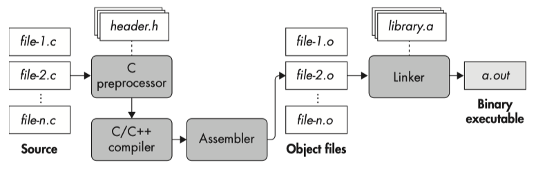
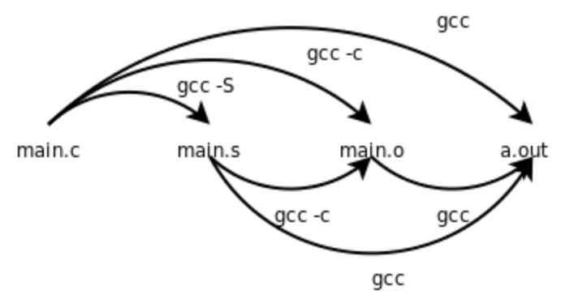

GCC Compilation Stage
GCC is a collection of compilers.
The C compiler itself turns C code into an assembly code listing, and this is sent to the assembler to be converted into an object file and later linked into a target binary.
If you only want some of the stages of compilation, you can use -x (or filename suffixes) to tell gcc where to start, and one of the options -c, -S, or -E to say where gcc is to stop.
The C Compilation Process#
Practical Binary Analysis | Chapter 1: Anatomy of a Binary
Binaries are produced through compilation, which is the process of translating human-readable source code, such as C or C ++ , into machine code that your processor can execute. Figure 1-1 shows the steps involved in a typical compilation process for C code (the steps for C ++ compilation are similar). Compiling C code involves four phases, one of which (awkwardly enough) is also called compilation, just like the full compilation process. The phases are preprocessing, compilation, assembly, and linking. In practice, modern compilers often merge some or all of these phases, but for demonstration purposes, I will cover them all separately.

gcc stop at specified stage#
GCC online documentation - gcc
Previous related post: Mainstream Compiler - gcc/clang/msvc.
You can tell gcc to stop at a certain stage by passing options.
-E: Stop after the preprocessing stage; do not run the compiler proper. The output is in the form of preprocessed source code, which is sent to the standard output.
- related post: Dump Compiler Options
Preprocessor-Options: Options Controlling the Preprocessor
-dletters: Says to make debugging dumps during compilation as specified by letters(M|D|N|I|U). The flags documented here are those relevant to the preprocessor. Other letters are interpreted by the compiler proper, or reserved for future versions of GCC, and so are silently ignored. If you specify letters whose behavior conflicts, the result is undefined. See GCC Developer Options, for more information.
-P: Inhibit generation of linemarkers in the output from the preprocessor. This might be useful when running the preprocessor on something that is not C code, and will be sent to a program which might be confused by the linemarkers.
-S: Stop after the stage of compilation proper; do not assemble. The output is in the form of an assembler code file for each non-assembler input file specified.
- By default, the assembler file name for a source file is made by replacing the suffix ‘.c’, ‘.i’, etc., with ‘
.s’.
-fverbose-asm
Options for Code Generation Conventions
-fverbose-asm: Put extra commentary information in the generated assembly code to make it more readable. This option is generally only of use to those who actually need to read the generated assembly code (perhaps while debugging the compiler itself).
-fno-verbose-asm, the default, causes the extra information to be omitted and is useful when comparing two assembler files.
The added comments include:
- information on the compiler version and command-line options,
- the source code lines associated with the assembly instructions, in the form
FILENAME:LINENUMBER:CONTENT OF LINE, - hints on which high-level expressions correspond to the various assembly instruction operands.
-c: Compile or assemble the source files, but do not link. The linking stage simply is not done. The ultimate output is in the form of an object file for each source file.
- By default, the object file name for a source file is made by replacing the suffix ‘.c’, ‘.i’, ‘.s’, etc., with ‘
.o’.
Linux C编程一站式学习 | 第18章 汇编与C之间的关系 - 18.2 main函数、启动例程和退出状态


gcc -S stop assembling#
After the preprocessing phase is complete, the source is ready to be compiled. The compilation phase takes the preprocessed code and translates it into assembly language.
Why does the compilation phase produce assembly language and not machine code? This design decision doesn’t seem to make sense in the context of just one language (in this case, C), but it does when you think about all the other languages out there.
We can intercept this assembly listing to view what the compiler itself is generating using the command-line option –S, e.g., invoking gcc main.c -S. GCC will then compile our program in main.c into an assembly listing and write it to the file main.s.
Most compilers also perform heavy optimization in this phase, typically configurable as an optimization level through command line switches such as options -O0 through -O3 in gcc. As you’ll see later, the degree of optimization during compilation can have a profound effect on disassembly.
# cc test-gdb.c -S [-o test-gdb.s]
$ cc test-gdb.c -S -o -
.arch armv8-a
.file "test-gdb.c"
.text
.align 2
.global func
.type func, %function
func:
.LFB0:
.cfi_startproc
sub sp, sp, #32
.cfi_def_cfa_offset 32
str w0, [sp, 12]
str wzr, [sp, 24]
str wzr, [sp, 28]
b .L2
.L3:
ldr w1, [sp, 24]
ldr w0, [sp, 28]
add w0, w1, w0
str w0, [sp, 24]
ldr w0, [sp, 28]
add w0, w0, 1
str w0, [sp, 28]
.L2:
ldr w1, [sp, 28]
ldr w0, [sp, 12]
cmp w1, w0
blt .L3
ldr w0, [sp, 24]
add sp, sp, 32
.cfi_def_cfa_offset 0
ret
.cfi_endproc
.LFE0:
.size func, .-func
.section .rodata
.align 3
.LC0:
.string "result[1-100] = %ld\n"
.align 3
.LC1:
.string "result[1-250] = %d\n"
.text
.align 2
.global main
.type main, %function
main:
.LFB1:
.cfi_startproc
stp x29, x30, [sp, -48]!
.cfi_def_cfa_offset 48
.cfi_offset 29, -48
.cfi_offset 30, -40
mov x29, sp
str w0, [sp, 28]
str x1, [sp, 16]
str xzr, [sp, 40]
mov w0, 1
str w0, [sp, 36]
b .L6
.L7:
ldrsw x0, [sp, 36]
ldr x1, [sp, 40]
add x0, x1, x0
str x0, [sp, 40]
ldr w0, [sp, 36]
add w0, w0, 1
str w0, [sp, 36]
.L6:
ldr w0, [sp, 36]
cmp w0, 100
ble .L7
ldr x1, [sp, 40]
adrp x0, .LC0
add x0, x0, :lo12:.LC0
bl printf
mov w0, 250
bl func
mov w1, w0
adrp x0, .LC1
add x0, x0, :lo12:.LC1
bl printf
mov w0, 0
ldp x29, x30, [sp], 48
.cfi_restore 30
.cfi_restore 29
.cfi_def_cfa_offset 0
ret
.cfi_endproc
.LFE1:
.size main, .-main
.ident "GCC: (Ubuntu 11.4.0-1ubuntu1~22.04) 11.4.0"
.section .note.GNU-stack,"",@progbits
# cc test-gdb.c -S -fverbose-asm [-o test-gdb.s]
$ cc test-gdb.c -S -fverbose-asm -o -
.arch armv8-a
.file "test-gdb.c"
// GNU C17 (Ubuntu 11.4.0-1ubuntu1~22.04) version 11.4.0 (aarch64-linux-gnu)
// compiled by GNU C version 11.4.0, GMP version 6.2.1, MPFR version 4.1.0, MPC version 1.2.1, isl version isl-0.24-GMP
// GGC heuristics: --param ggc-min-expand=91 --param ggc-min-heapsize=115878
// options passed: -mlittle-endian -mabi=lp64 -fasynchronous-unwind-tables -fstack-protector-strong -fstack-clash-protection
.text
.align 2
.global func
.type func, %function
func:
.LFB0:
.cfi_startproc
sub sp, sp, #32 //,,
.cfi_def_cfa_offset 32
str w0, [sp, 12] // n, n
// test-gdb.c:5: int sum=0,i;
str wzr, [sp, 24] //, sum
// test-gdb.c:6: for(i=0; i<n; i++)
str wzr, [sp, 28] //, i
// test-gdb.c:6: for(i=0; i<n; i++)
b .L2 //
.L3:
// test-gdb.c:8: sum+=i;
ldr w1, [sp, 24] // tmp95, sum
ldr w0, [sp, 28] // tmp96, i
add w0, w1, w0 // tmp94, tmp95, tmp96
str w0, [sp, 24] // tmp94, sum
// test-gdb.c:6: for(i=0; i<n; i++)
ldr w0, [sp, 28] // tmp98, i
add w0, w0, 1 // tmp97, tmp98,
str w0, [sp, 28] // tmp97, i
.L2:
// test-gdb.c:6: for(i=0; i<n; i++)
ldr w1, [sp, 28] // tmp99, i
ldr w0, [sp, 12] // tmp100, n
cmp w1, w0 // tmp99, tmp100
blt .L3 //,
// test-gdb.c:10: return sum;
ldr w0, [sp, 24] // _6, sum
// test-gdb.c:11: }
add sp, sp, 32 //,,
.cfi_def_cfa_offset 0
ret
.cfi_endproc
.LFE0:
.size func, .-func
.section .rodata
.align 3
.LC0:
.string "result[1-100] = %ld\n"
.align 3
.LC1:
.string "result[1-250] = %d\n"
.text
.align 2
.global main
.type main, %function
main:
.LFB1:
.cfi_startproc
stp x29, x30, [sp, -48]! //,,,
.cfi_def_cfa_offset 48
.cfi_offset 29, -48
.cfi_offset 30, -40
mov x29, sp //,
str w0, [sp, 28] // argc, argc
str x1, [sp, 16] // argv, argv
// test-gdb.c:16: long result = 0;
str xzr, [sp, 40] //, result
// test-gdb.c:17: for(i=1; i<=100; i++)
mov w0, 1 // tmp96,
str w0, [sp, 36] // tmp96, i
// test-gdb.c:17: for(i=1; i<=100; i++)
b .L6 //
.L7:
// test-gdb.c:19: result += i;
ldrsw x0, [sp, 36] // _1, i
ldr x1, [sp, 40] // tmp98, result
add x0, x1, x0 // tmp97, tmp98, _1
str x0, [sp, 40] // tmp97, result
// test-gdb.c:17: for(i=1; i<=100; i++)
ldr w0, [sp, 36] // tmp100, i
add w0, w0, 1 // tmp99, tmp100,
str w0, [sp, 36] // tmp99, i
.L6:
// test-gdb.c:17: for(i=1; i<=100; i++)
ldr w0, [sp, 36] // tmp101, i
cmp w0, 100 // tmp101,
ble .L7 //,
// test-gdb.c:22: printf("result[1-100] = %ld\n", result );
ldr x1, [sp, 40] //, result
adrp x0, .LC0 // tmp102,
add x0, x0, :lo12:.LC0 //, tmp102,
bl printf //
// test-gdb.c:23: printf("result[1-250] = %d\n", func(250) );
mov w0, 250 //,
bl func //
mov w1, w0 //, _2
adrp x0, .LC1 // tmp103,
add x0, x0, :lo12:.LC1 //, tmp103,
bl printf //
// test-gdb.c:25: return 0;
mov w0, 0 // _11,
// test-gdb.c:26: }
ldp x29, x30, [sp], 48 //,,,
.cfi_restore 30
.cfi_restore 29
.cfi_def_cfa_offset 0
ret
.cfi_endproc
.LFE1:
.size main, .-main
.ident "GCC: (Ubuntu 11.4.0-1ubuntu1~22.04) 11.4.0"
.section .note.GNU-stack,"",@progbits
gcc -c stop linking#
In the assembly phase, you finally get to generate some real machine code! The input of the assembly phase is the set of assembly language files generated in the compilation phase, and the output is a set of object files, sometimes also referred to as modules. Object files contain machine instructions that are in principle executable by the processor. You need to do some more work before you have a ready-torun binary executable file.
Typically, each source file corresponds to one assembly file, and each assembly file corresponds to one object file. To generate an object file, you can pass the -c flag to gcc. This option tells GCC to create the object file without invoking the linking process, so we can then run objdump on just our compiled code without seeing the disassembly of all the surrounding object files such as a C runtime.
It can be broken down into two steps, as follows:
- compile to assembly:
cc test-gdb.c -S [-o test-gdb.s] - assemble to object:
as test-gdb.s -o test-gdb.o
ELF header#
related post: ELF layout.
Display the ELF file header:
$ file test-gdb.o
test-gdb.o: ELF 64-bit LSB relocatable, ARM aarch64, version 1 (SYSV), not stripped
$ objdump -f test-gdb.o
test-gdb.o: file format elf64-littleaarch64
architecture: aarch64, flags 0x00000011:
HAS_RELOC, HAS_SYMS
start address 0x0000000000000000
$ readelf -h test-gdb.o
ELF Header:
Magic: 7f 45 4c 46 02 01 01 00 00 00 00 00 00 00 00 00
Class: ELF64
Data: 2's complement, little endian
Version: 1 (current)
OS/ABI: UNIX - System V
ABI Version: 0
Type: REL (Relocatable file)
Machine: AArch64
Version: 0x1
Entry point address: 0x0
Start of program headers: 0 (bytes into file)
Start of section headers: 1152 (bytes into file)
Flags: 0x0
Size of this header: 64 (bytes)
Size of program headers: 0 (bytes)
Number of program headers: 0
Size of section headers: 64 (bytes)
Number of section headers: 13
Section header string table index: 12
At this stage, readelf -h shows that test-gdb.o's type is REL (Relocatable file), not yet executable, neither DYN pie nor integrated EXEC.
The output of objdump -f shows that the BFD format specific flags are HAS_RELOC, HAS_SYMS. The keyword is HAS_RELOC, which distinguishes between direct executable (EXEC_P) and PIE executable (DYNAMIC).
Use hexdump to check the ELF Identification(e_ident[EI_NIDENT]) on the first 16 bytes in Elf64_Ehdr:
$ hd -n 16 test-gdb.o
00000000 7f 45 4c 46 02 01 01 00 00 00 00 00 00 00 00 00 |.ELF............|
00000010
e_type=ET_REL=0x0001, Relocatable file.
e_machine=EM_AARCH64=0xb7=183, ARM AARCH64.
sections#
objdump [-h|--section-headers|--headers]: Display the contents of the section headers.
$ objdump -hw test-gdb.o
test-gdb.o: file format elf64-littleaarch64
Sections:
Idx Name Size VMA LMA File off Algn Flags
0 .text 000000c8 0000000000000000 0000000000000000 00000040 2**2 CONTENTS, ALLOC, LOAD, RELOC, READONLY, CODE
1 .data 00000000 0000000000000000 0000000000000000 00000108 2**0 CONTENTS, ALLOC, LOAD, DATA
2 .bss 00000000 0000000000000000 0000000000000000 00000108 2**0 ALLOC
3 .rodata 0000002c 0000000000000000 0000000000000000 00000108 2**3 CONTENTS, ALLOC, LOAD, READONLY, DATA
4 .comment 0000002c 0000000000000000 0000000000000000 00000134 2**0 CONTENTS, READONLY
5 .note.GNU-stack 00000000 0000000000000000 0000000000000000 00000160 2**0 CONTENTS, READONLY
6 .eh_frame 00000050 0000000000000000 0000000000000000 00000160 2**3 CONTENTS, ALLOC, LOAD, RELOC, READONLY, DATA
readelf [-S|--section-headers|--sections]: Display the sections' header.
$ readelf -SW test-gdb.o
There are 13 section headers, starting at offset 0x480:
Section Headers:
[Nr] Name Type Address Off Size ES Flg Lk Inf Al
[ 0] NULL 0000000000000000 000000 000000 00 0 0 0
[ 1] .text PROGBITS 0000000000000000 000040 0000c8 00 AX 0 0 4
[ 2] .rela.text RELA 0000000000000000 000340 0000a8 18 I 10 1 8
[ 3] .data PROGBITS 0000000000000000 000108 000000 00 WA 0 0 1
[ 4] .bss NOBITS 0000000000000000 000108 000000 00 WA 0 0 1
[ 5] .rodata PROGBITS 0000000000000000 000108 00002c 00 A 0 0 8
[ 6] .comment PROGBITS 0000000000000000 000134 00002c 01 MS 0 0 1
[ 7] .note.GNU-stack PROGBITS 0000000000000000 000160 000000 00 0 0 1
[ 8] .eh_frame PROGBITS 0000000000000000 000160 000050 00 A 0 0 8
[ 9] .rela.eh_frame RELA 0000000000000000 0003e8 000030 18 I 10 8 8
[10] .symtab SYMTAB 0000000000000000 0001b0 000168 18 11 12 8
[11] .strtab STRTAB 0000000000000000 000318 000023 00 0 0 1
[12] .shstrtab STRTAB 0000000000000000 000418 000061 00 0 0 1
Key to Flags:
W (write), A (alloc), X (execute), M (merge), S (strings), I (info),
L (link order), O (extra OS processing required), G (group), T (TLS),
C (compressed), x (unknown), o (OS specific), E (exclude),
D (mbind), p (processor specific)
Compared to objdump -h, readelf -S outputs three more types of RELA, SYMTAB and STRTAB.
symbols#
symbol table#
objdump [-t|--syms]: Print the symbol table entries of the file.
l/g: local, globald: debugging symboldf: debugging symbol - fileF: functionUND: undefined
$ objdump -t test-gdb.o
test-gdb.o: file format elf64-littleaarch64
SYMBOL TABLE:
0000000000000000 l df *ABS* 0000000000000000 test-gdb.c
0000000000000000 l d .text 0000000000000000 .text
0000000000000000 l d .data 0000000000000000 .data
0000000000000000 l d .bss 0000000000000000 .bss
0000000000000000 l d .rodata 0000000000000000 .rodata
0000000000000000 l d .note.GNU-stack 0000000000000000 .note.GNU-stack
0000000000000000 l d .eh_frame 0000000000000000 .eh_frame
0000000000000000 l d .comment 0000000000000000 .comment
0000000000000000 g F .text 000000000000004c func
000000000000004c g F .text 000000000000007c main
0000000000000000 *UND* 0000000000000000 printf
readelf [-s|--syms|--symbols]: Displays the entries in symbol table section of the file, if it has one.
- Refer to Type (Using as) for a knowledge of the Type column, such as
STT_FUNC,STT_OBJECT,STT_NOTYPE,etc.
$ readelf -s test-gdb.o
Symbol table '.symtab' contains 15 entries:
Num: Value Size Type Bind Vis Ndx Name
0: 0000000000000000 0 NOTYPE LOCAL DEFAULT UND
1: 0000000000000000 0 FILE LOCAL DEFAULT ABS test-gdb.c
2: 0000000000000000 0 SECTION LOCAL DEFAULT 1 .text
3: 0000000000000000 0 SECTION LOCAL DEFAULT 3 .data
4: 0000000000000000 0 SECTION LOCAL DEFAULT 4 .bss
5: 0000000000000000 0 NOTYPE LOCAL DEFAULT 1 $x
6: 0000000000000000 0 SECTION LOCAL DEFAULT 5 .rodata
7: 0000000000000000 0 NOTYPE LOCAL DEFAULT 5 $d
8: 0000000000000000 0 SECTION LOCAL DEFAULT 7 .note.GNU-stack
9: 0000000000000014 0 NOTYPE LOCAL DEFAULT 8 $d
10: 0000000000000000 0 SECTION LOCAL DEFAULT 8 .eh_frame
11: 0000000000000000 0 SECTION LOCAL DEFAULT 6 .comment
12: 0000000000000000 76 FUNC GLOBAL DEFAULT 1 func
13: 000000000000004c 124 FUNC GLOBAL DEFAULT 1 main
14: 0000000000000000 0 NOTYPE GLOBAL DEFAULT UND printf
List symbols#
List symbols in test-gdb.o:
Refer to nm for a knowledge of the symbol type, such as
T/t,D/d,B/b,U, etc.
T: The symbol is in the text (code) section, uppercase means global (external).U: The symbol is undefined.
Print size of defined symbols:
$ nm -S test-gdb.o
0000000000000000 000000000000004c T func
000000000000004c 000000000000007c T main
U printf
Display only external(global) symbols:
Display only defined/undefined symbols:
$ nm --defined-only test-gdb.o
0000000000000000 T func
000000000000004c T main
$ nm -u test-gdb.o
U printf
disassemble#
related post: objdump --disassemble.
gcc -c tells GCC to create the object file without invoking the linking process, so we can then run objdump on just our compiled code without seeing the disassembly of all the surrounding object files such as a C runtime.
objdump -d#
objdump [-d|--disassemble[=symbol]]: Display the assembler mnemonics for the machine instructions from the input file.
Display assembler contents of executable sections, here is the .text section:
$ objdump -d test-gdb.o
test-gdb.o: file format elf64-littleaarch64
Disassembly of section .text:
0000000000000000 <func>:
0: d10083ff sub sp, sp, #0x20
4: b9000fe0 str w0, [sp, #12]
8: b9001bff str wzr, [sp, #24]
c: b9001fff str wzr, [sp, #28]
10: 14000008 b 30 <func+0x30>
14: b9401be1 ldr w1, [sp, #24]
18: b9401fe0 ldr w0, [sp, #28]
1c: 0b000020 add w0, w1, w0
20: b9001be0 str w0, [sp, #24]
24: b9401fe0 ldr w0, [sp, #28]
28: 11000400 add w0, w0, #0x1
2c: b9001fe0 str w0, [sp, #28]
30: b9401fe1 ldr w1, [sp, #28]
34: b9400fe0 ldr w0, [sp, #12]
38: 6b00003f cmp w1, w0
3c: 54fffecb b.lt 14 <func+0x14> // b.tstop
40: b9401be0 ldr w0, [sp, #24]
44: 910083ff add sp, sp, #0x20
48: d65f03c0 ret
000000000000004c <main>:
4c: a9bd7bfd stp x29, x30, [sp, #-48]!
50: 910003fd mov x29, sp
54: b9001fe0 str w0, [sp, #28]
58: f9000be1 str x1, [sp, #16]
5c: f90017ff str xzr, [sp, #40]
60: 52800020 mov w0, #0x1 // #1
64: b90027e0 str w0, [sp, #36]
68: 14000008 b 88 <main+0x3c>
6c: b98027e0 ldrsw x0, [sp, #36]
70: f94017e1 ldr x1, [sp, #40]
74: 8b000020 add x0, x1, x0
78: f90017e0 str x0, [sp, #40]
7c: b94027e0 ldr w0, [sp, #36]
80: 11000400 add w0, w0, #0x1
84: b90027e0 str w0, [sp, #36]
88: b94027e0 ldr w0, [sp, #36]
8c: 7101901f cmp w0, #0x64
90: 54fffeed b.le 6c <main+0x20>
94: f94017e1 ldr x1, [sp, #40]
98: 90000000 adrp x0, 0 <func>
9c: 91000000 add x0, x0, #0x0
a0: 94000000 bl 0 <printf>
a4: 52801f40 mov w0, #0xfa // #250
a8: 94000000 bl 0 <func>
ac: 2a0003e1 mov w1, w0
b0: 90000000 adrp x0, 0 <func>
b4: 91000000 add x0, x0, #0x0
b8: 94000000 bl 0 <printf>
bc: 52800000 mov w0, #0x0 // #0
c0: a8c37bfd ldp x29, x30, [sp], #48
c4: d65f03c0 ret
objdump -S#
Intermix source code with disassembly.
objdump [-S|--source]: Display source code intermixed with disassembly, if possible. Implies-d.[--source-comment[=text]]: Like the-Soption, but all source code lines are displayed with a prefix of txt(defaults to#).
It needs the debugging information to find out which filename and line number are associated with the corresponding assembly/instructions.
To tell GCC to emit extra information for use by a debugger, in almost all cases you need only to add -g to your other options.
This following comprehensive example demonstrates disassembling the specified symbol/function with a mix of source code comment markers and line numbers.
Here we only disassemble the subroutine func:
$ objdump --disassemble=func --source-comment -l test-gdb.o
test-gdb.o: file format elf64-littleaarch64
Disassembly of section .text:
0000000000000000 <func>:
func():
/home/pifan/Projects/cpp/test-gdb.c:4
# #include <stdio.h>
#
# int func(int n)
# {
0: d10083ff sub sp, sp, #0x20
4: b9000fe0 str w0, [sp, #12]
/home/pifan/Projects/cpp/test-gdb.c:5
# int sum=0,i;
8: b9001bff str wzr, [sp, #24]
/home/pifan/Projects/cpp/test-gdb.c:6
# for(i=0; i<n; i++)
c: b9001fff str wzr, [sp, #28]
10: 14000008 b 30 <func+0x30>
/home/pifan/Projects/cpp/test-gdb.c:8 (discriminator 3)
# {
# sum+=i;
14: b9401be1 ldr w1, [sp, #24]
18: b9401fe0 ldr w0, [sp, #28]
1c: 0b000020 add w0, w1, w0
20: b9001be0 str w0, [sp, #24]
/home/pifan/Projects/cpp/test-gdb.c:6 (discriminator 3)
# for(i=0; i<n; i++)
24: b9401fe0 ldr w0, [sp, #28]
28: 11000400 add w0, w0, #0x1
2c: b9001fe0 str w0, [sp, #28]
/home/pifan/Projects/cpp/test-gdb.c:6 (discriminator 1)
30: b9401fe1 ldr w1, [sp, #28]
34: b9400fe0 ldr w0, [sp, #12]
38: 6b00003f cmp w1, w0
3c: 54fffecb b.lt 14 <func+0x14> // b.tstop
/home/pifan/Projects/cpp/test-gdb.c:10
# }
# return sum;
40: b9401be0 ldr w0, [sp, #24]
/home/pifan/Projects/cpp/test-gdb.c:11
# }
44: 910083ff add sp, sp, #0x20
48: d65f03c0 ret